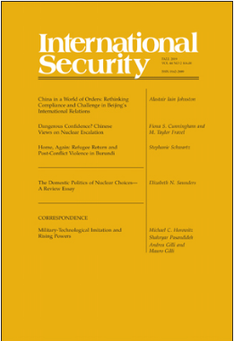

收录于合集 #新刊速递 123个


期刊简介

《国际安全》（ International Security ）于1976年创立，是国际和国家安全领域的顶级同行评议学术期刊，以季刊形式发行。由哈佛大学贝尔弗科学与国际事务中心（Belfer Center for Science and International Affairs at Harvard University）编辑，麻省理工学院出版社（MIT Press）组织出版。根据2018 Journal Citation Reports显示，其影响因子为4.500，位列“国际关系”类别期刊第二位。
本期编委
编译：徐枫潇 李桐 王国欣
校对：徐枫潇 李桐 王国欣
审核：施榕
排版：李佳霖

本期目录
1. China in a World of Orders: Rethinking Compliance and Challenge in Beijing’s International Relations
秩序世界下的中国：反思中国国际关系中的合规与挑战
2. Dangerous Confidence? Chinese Views on Nuclear Escalation
危险的自信心？中国对核升级的看法
3. Home, Again: Refugee Return and Post-Conflict Violence in Burundi
再次返乡：布隆迪的难民回归与冲突后暴力
4. The Domestic Politics of Nuclear Choices—A Review Essay
核政策选择的国内政治机制——评论文章
摘要译文
1.
秩序世界下的中国：反思中国国际关系中的合规与挑战
【题目】China in a World of Orders: Rethinking Compliance and Challenge in Beijing’s International Relations
【作者】Alastair Iain Johnston，哈佛大学教授
【摘要】美国的许多学者和政策制定者接受这样一种说法，即：中国是一个修正主义国家，挑战以美国主导的自由主义国际秩序。这种叙述假定存在一种独特的自由秩序，且对该秩序构成的挑战是显而易见的。但“秩序”和“挑战”概念的操作化却不尽如人意。秩序至少有四种可行的操作化，其中三种都或明或暗地体现在主导叙事中。从历史的维度，它们倾向于假设美国的利益和自由秩序的内容是大致等同的。第四种操作化将秩序视为多个国家、次国家、非国家和其他国际行为体相互作用的一种凸显特性。因此，至少有八个“基于特定问题的秩序”(例如，军事、贸易、信息和政治发展等)。对此，中国或接受，或否认，或表示与之共存。鉴于多重的秩序和不同程度的挑战，这种“美国主导的自由主义国际秩序，受到修正主义中国的挑战”的说法，在理论与实践中都鲜有意义。上述发现指出，需要发展更具普遍性的观测“秩序”与“合规”的方法。
Many scholars and policymakers in the United States accept the narrative that China is a revisionist state challenging the U.S.-dominated international liberal order. The narrative assumes that there is a singular liberal order and that it is obvious what constitutes a challenge to it. The concepts of order and challenge are, however, poorly operationalized. There are at least four plausible operationalizations of order, three of which are explicitly or implicitly embodied in the dominant narrative. These tend to assume, historically, that U.S. interests and the content of the liberal order are almost identical. The fourth operationalization views order as an emergent property of the interaction of multiple state, substate, nonstate, and international actors. As a result, there are at least eight “issue-specific orders” (e.g. military, trade, information, and political development). Some of these China accepts; some it rejects; and some it is willing to live with. Given these multiple orders and varying levels of challenge, the narrative of a U.S.-dominated liberal international order being challenged by a revisionist China makes little conceptual or empirical sense. The findings point to the need to develop more generalizable ways of observing orders and compliance.
【编译】徐枫潇
【校对】李桐
2.
危险的自信心？中国对核升级的看法
【题目】Dangerous Confidence? Chinese Views on Nuclear Escalation
【作者】Fiona S. Cunningham 是乔治华盛顿大学政治学与国际事物方向的助理教授；M. Taylor Fravel是麻省理工学院政治学系教授和安全研究项目主任。
【摘要】中国对核升级的看法是评估美中两国在危机或武装冲突中核升级潜力的关键，但这些看法尚未得到系统的研究。对一手中文资料的回顾和对中国战略共同体成员的采访表明，中国对一旦使用核武器就能控制核升级持怀疑态度，因此，即使是有限的使用，领导人也会受到限制。这些观点反映在中国的核作战理论(只概述了报复性打击的计划，缺乏任何明确的有限核使用计划)及其力量结构(缺乏战术核武器)中。长期以来，中国的核战略与常规战略脱钩，中国战略圈内的组织偏见，以及空间、网络和常规导弹武器作为战略杠杆的替代来源的有效性，最能解释中国对核升级的看法。中国对“中美冲突不会升级到使用核武器”的坚信，可能会阻碍其识别核升级风险的能力。与此同时，美国学者和政策制定者强调同中国的冲突出现意外升级的风险，但他们比中国同行更有信心，认为核武器的使用可能仍停留在有限的阶段。但这些截然相左的观点结合在一起，可能会促使中美冲突迅速升级为一场无限的核战争。
Chinese views of nuclear escalation are key to assessing the potential for nuclear escalation in a crisis or armed conflict between the United States and China, but they have not been examined systematically. A review of original Chinese-language sources and interviews with members of China’s strategic community suggest that China is skeptical that nuclear escalation could be controlled once nuclear weapons are used and, thus, leaders would be restrained from pursuing even limited use. These views are reflected in China’s nuclear operational doctrine (which outlines plans for retaliatory strikes only and lacks any clear plans for limited nuclear use) and its force structure (which lacks tactical nuclear weapons). The long-standing decoupling of Chinese nuclear and conventional strategy, organizational biases within China’s strategic community, and the availability of space, cyber, and conventional missile weapons as alternative sources of strategic leverage best explain Chinese views toward nuclear escalation. China’s confidence that a U.S.-China conflict would not escalate to the use of nuclear weapons may hamper its ability to identify nuclear escalation risks in such a scenario. Meanwhile,U.S.scholars and policymakers emphasize the risk of inadvertent escalation in a conflict with China, but they are more confident than their Chinese counterparts that the use of nuclear weapons could remain limited. When combined, these contrasting views could create pressure for a U.S.-China conflict to escalate rapidly into an unlimited nuclear war.
【编译】徐枫潇
【校对】李桐
3.
再次返乡：布隆迪的难民回归与冲突后暴力
【题目】Home, Again: Refugee Return and Post-Conflict Violence in Burundi
【作者】Stephanie Schwartz，美国南加州大学助理教授
【摘要】在冲突后社会中，返乡的难民和非移民之间的冲突，是一个普遍存在但又经常被忽视的安全问题。尽管学者们已经证明了难民外迁是如何导致内战区域化、延长和程度加剧的问题，但难民返乡的安全后果问题却还没有得到理论上的解释。有关布隆迪1993-2005年内战后难民返乡的分析证实了一种新的难民返乡与冲突理论：移民返乡导致个体间会依据战时是否移居以及移居地点产生一种新的身份界定。由于战争期间不同的居住地间各自存在着不同的地方制度，诸如土地制度、公民制度或语言法等，对返乡难民产生差异性的影响，由此造成的裂痕成为原籍国冲突的新来源。2014年到2016年间在布隆迪和坦桑尼亚收集的民族志证据，说明了难民的回归是如何导致返乡者与非移民之间发生暴力对抗的。因此，当布隆迪在2015年面临国家层面的政治危机时，先前的返乡经验决定了难民外迁的特征和时机。阐明人口反向流动在塑造未来冲突中的作用拓展了政治暴力理论，证明了为什么打破难民回归与重复流离失所的周期对于预防冲突至关重要。
Conflict between returning refugees and nonmigrant populations is a pervasive yet frequently overlooked security issue in post-conflict societies. Although scholars have demonstrated how out-migration can regionalize, prolong, and intensify civil war, the security consequences of return migration are undertheorized. An analysis of refugee return to Burundi after the country’s 1993–2005 civil war corroborates a new theory of return migration and conflict: return migration creates new identity divisions based on whether and where individuals were displaced during wartime. These cleavages become new sources of conflict in the countries of origin when local institutions, such as land codes, citizenship regimes, or language laws, yield differential outcomes for individuals based on where they lived during the war. Ethnographic evidence gathered in Burundi and Tanzania from 2014 to 2016 shows how the return of refugees created violent rivalries between returnees and nonmigrants. Consequently, when Burundi faced a national-level political crisis in 2015, prior experiences of return shaped both the character and timing of out-migration from Burundi. Illuminating the role of reverse population movements in shaping future conflict extends theories of political violence and demonstrates why breaking the cycle of return and repeat displacement is essential to the prevention of conflict.
【编译】李桐
【校对】王国欣
4.
The Domestic Politics of Nuclear Choices—A Review Essay
【作者】Elizabeth N. Saunders，乔治城大学副教授
【译文】国内政治将在何时、以及如何影响一国的核政策选择？近年来，关注核安全的学术研究已经对不同的核决策提出了很多国内政治解释。这些解释部分源于比较流行的两种研究趋势：一是学者们通过核扩散前后国家行为的研究，拓展了研究核问题的时间线；二是学者们超越了以往那种民主和专治的生硬区分，转而更加细致的理解国内限制因素。但如果不将这两种因素结合在一起，新的国内政治发现很可能会被视为无法解释核决策重要变化而被忽视。本文评估了最近对国内政治与核安全关系的研究，并提出一个理解国内政治机制可能在何时、以及如何影响核政策选择的分析框架。与之前大多数观点不同，文中所提到的很多最新的国内政治机制在某种程度上是自上而下的逻辑，即领导人有意维持、或者放松对核政策选择的控制。两个维度的因素决定着国内政治影响核政策选择的程度与实质：威胁的不确定性程度，和扩大核决策的国内行为体范围对领导人的成本和收益。本文所提出的分析框架有助于理解近期核安全研究文献中所探究的案例，也有助于理解国内政治观点何时以及如何背离基于安全的分析所做出的预测。
When and how do domestic politics influence a state’s nuclear choices? Recent scholarship on nuclear security develops many domestic-political explanations for different nuclear decisions. These explanations are partly the result of two welcome trends: first, scholars have expanded the nuclear timeline, examining state behavior before and after nuclear proliferation; and second, scholars have moved beyond blunt distinctions between democracies and autocracies to more fine-grained understandings of domestic constraints. But without linkages between them, new domestic-political findings could be dismissed as a laundry list of factors that do not explain significant variation in nuclear decisions. This review essay assesses recent research on domestic politics and nuclear security, and develops a framework that illuminates when and how domestic-political mechanisms are likely to affect nuclear choices. In contrast to most previous domestic arguments, many of the newer domestic-political mechanisms posited in the literature are in some way top-down; that is, they show leaders deliberately maintaining or loosening control over nuclear choices. Two dimensions govern the extent and nature of domestic-political influence on nuclear choices: the degree of threat uncertainty and the costs and benefits to leaders of expanding the circle of domestic actors involved in a nuclear decision. The framework developed in this review essay helps make sense of several cases explored in the recent nuclear security literature. It also has implications for understanding when and how domestic-political arguments might diverge from the predictions of security-based analyses.
【编译】王国欣
【校对】徐枫潇
点击左下角“ 阅读原文”可获取本期英文版原文
扫下方二维码查看往期精彩
分类导览 1

分类导览 2

国政学人
支持学术公益与知识传播
微信扫一扫赞赏作者 __赞赏
已喜欢，对作者说句悄悄话
取消 __
发送给作者
发送
最多40字，当前共字
上一页 1/3 下一页
长按二维码向我转账
支持学术公益与知识传播
受苹果公司新规定影响，微信 iOS 版的赞赏功能被关闭，可通过二维码转账支持公众号。